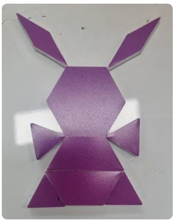
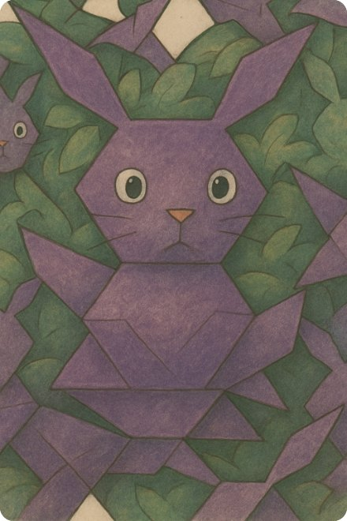
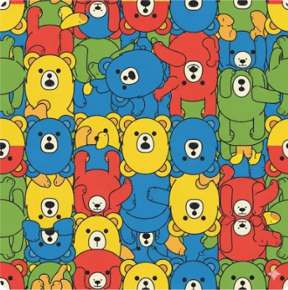
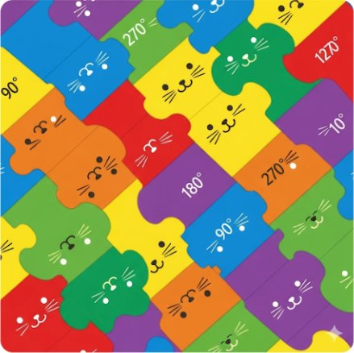
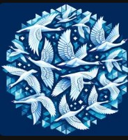

테셀레이션, 왜 빈틈이 없을까?
평면을 빈틈없이 · 겹치지 않게 · 규칙적으로 채우는 것
꼭짓점 실험실 — 한 점에 도형을 모아 보세요
정다각형 한 내각 표 — 예상하고 눌러서 확인
| 정다각형 | 한 내각 | 360° ÷ 내각 | 혼자 채울까? |
|---|
한 내각 = 180° × (n − 2) ÷ n
에셔의 비밀 — 세 가지 움직임
- 밀기(평행이동) — 그대로 옆으로 옮기기
- 돌리기(회전이동) — 한 점을 중심으로 90° · 120° · 180° 돌리기
- 뒤집기(대칭이동) — 거울처럼 뒤집기
에셔의 도마뱀은 정육각형의 변을 잘라 붙여서(한 변을 깎으면 맞은편에 붙이기) 만들어졌어요.
체험해 보기 (EBS MATH)
🧠 영재 도전
- 정다각형 한 가지만으로 테셀레이션이 되는 것은 몇 가지일까? 왜 그것뿐일까? 내각의 식으로 설명해 보세요.
- 정오각형은 왜 안 될까? 정오각형 3개를 모으면 몇 도가 남을까?
- 두 가지 이상 정다각형으로 한 점을 360°로 채우는 조합을 찾아보세요. (힌트: 3·3·4·3·4)
- 정다각형이 아닌 아무 삼각형, 아무 사각형은 테셀레이션이 될까? 종이로 잘라 확인해 보세요.
패턴블럭으로 작품 만들기
실물 블록으로 만들거나, 아래 웹 블록판에서 만들어요
- 만들기블록판에서 작품 만들기
- 이름 붙이기“무엇을 만들었나요?” 적기
- 💾 내 기기에 저장③에서 제미나이에 올릴 그림
- 📤 선생님께 제출여러 번 보내도 괜찮아요
저장하면 ③ 다른 스타일로의 프롬프트에 작품 이름과 블록 개수가 자동으로 들어가요.
실물 패턴블럭으로 만들었다면
- 작품을 위에서 반듯하게 사진 찍기 (그림자 · 손 · 얼굴 X)
- 위 칸에 “무엇을 만들었나요?” 적기
- 📤 선생님께 제출 → 창에서 사진 고르기로 찍은 사진 넣기
- ③에서는 찍은 사진을 제미나이에 올리면 돼요
작품 설명 예시
“저는 정육각형과 정삼각형을 이용해 헤엄치는 물고기를 만들었습니다. 파란색과 초록색 블록을 사용하여 시원한 바다 느낌을 표현했습니다.”
영재반 한 줄 더: 사용한 블록 수와 넓이를 삼각형(초록) 단위로 계산해 보세요. 육각형=6, 사다리꼴=3, 마름모=2, 삼각형=1.
내 작품 넓이: 0 삼각형 · 대칭축이 있나요?
내 작품을 다른 스타일로
프롬프트 공식: 형태 + 대상 + 스타일 + 부가 설명
- 스타일 고르기아래 조립기에서 고르고 프롬프트 복사
- 제미나이 열기②에서 저장한 그림 올리기
- 붙여 넣기복사한 프롬프트 붙여 넣고 보내기
- 검증 · 제출결과 그림 저장 → 📤 선생님께 제출
프롬프트 조립기
예시 — 패턴블럭 토끼 → 지브리 스타일


🧠 수학자의 눈으로 검증
- AI 그림에서 블록의 개수가 그대로인가요? 몇 개가 바뀌었나요?
- 정육각형이 정육각형으로 남았나요? 각이 달라진 곳은?
- 바뀐 곳을 찾아 “○○는 그대로 두고 다시 그려 줘”로 고쳐 보세요.
바로 쓰는 프롬프트
제미나이 결과 제출하기
마음에 드는 결과 그림을 내 기기에 저장한 뒤 올려요. 지금 만든 프롬프트도 함께 보내져요. 여러 번 보내도 괜찮아요.
※ 친구 얼굴 · 실명 · 유명 캐릭터 이름은 프롬프트에 넣지 않기. AI가 그린 그림은 “AI와 함께 만듦”.
테셀레이션 무늬 만들기
두 가지 활동을 따로 해요 — 위 버튼으로 골라요
- 불러오기② 내 패턴블럭 작품 불러오기
- 움직이기밀기 · 돌리기 · 뒤집기 골라 보기
- 검증하기빈틈 · 겹침이 없나요?
- 저장 · 제출💾 저장하거나 📤 제출 (여러 번 OK)
한 조각을 밀고 · 돌리고 · 뒤집어 무늬 만들기
이 활동은 웹에서 직접 무늬를 만드는 거예요. 제미나이는 쓰지 않아요.
- 조립하기도형 · 주제 · 움직임 고르고 프롬프트 복사
- 제미나이새 대화에 붙여 넣어 무늬 만들기
- 검증하기체크리스트로 확인, 틀리면 고쳐 달라고
- 저장 · 제출결과 저장 → 📤 제출 (여러 번 OK)



테셀레이션 프롬프트 조립기
🧠 뽑은 뒤 검증 체크리스트
- 정말 빈틈 · 겹침이 없나요? 확대해서 찾아보기
- 한 꼭짓점에 모인 각의 합은 360°?
- 어떤 움직임(밀기 · 돌리기 · 뒤집기)이 쓰였나요? 몇 도 돌렸나요?
- 컵에 감았을 때 왼쪽 끝과 오른쪽 끝이 이어지나요?
AI가 틀렸다면?
“빈틈이 보여” “고양이 크기가 다 달라”처럼 무엇이 틀렸는지 수학 용어로 말해 주면 더 잘 고쳐요. 아래 ‘고쳐 달라고 하기’ 프롬프트를 써 보세요.
바로 쓰는 프롬프트
제미나이 테셀레이션 제출하기
결과 그림을 내 기기에 저장한 뒤 올려요. 지금 만든 프롬프트도 함께 보내져요. 여러 번 보내도 괜찮아요.
나만의 테셀레이션 컵
디지털 작품이 진짜 물건이 되는 순간
인쇄 크기: 가로 21cm × 세로 8.8cm (11온스 머그 기준, 300dpi). 인쇄할 때 ‘실제 크기(100%)’로. 프린터에 ‘좌우반전’ 설정이 따로 있으면 두 번 뒤집히지 않게 ‘원본 방향’ 파일을 쓰세요.
↑ 전사지에 인쇄될 모습 (좌우반전)
전사 순서
- 도안을 전사 용지에 좌우반전으로 인쇄하기 (선생님이 한꺼번에 준비)
- 여백 없이 깔끔하게 오려 컵에 감고 내열 테이프로 고정
- 선생님과 1:1로 컵을 프레스에 넣고 레버 닫기
- 설정 시간(예: 180초) 뒤 알람 → 선생님이 꺼내기
- 냉각 장소에서 완전히 식힌 뒤, 전사 용지를 떼며 작품 확인!
🧠 컵 위의 수학
- 컵 둘레가 약 25cm인데 도안 가로는 21cm예요. 손잡이 쪽 4cm는 어떻게 될까요?
- 왜 좌우반전해서 인쇄할까요? 도장과 무엇이 닮았나요?
- 컵을 한 바퀴 돌리면 무늬가 몇 번 반복되나요? (무늬 크기를 바꿔 확인)
메이커 성찰 일지
Q1. 디지털 세상에 있던 나의 디자인이 실제 컵이 되는 과정을 보며 어떤 생각이 들었나요?
Q2. 완성된 작품에서 가장 마음에 드는 부분과 그 이유는?
Q3. 내 컵에 숨어 있는 수학(도형 · 각 · 움직임)을 친구에게 설명해 보세요.
작품 올리기
각 활동 화면의 📤 버튼으로 보내도 되고, 여기서 다른 사진을 올려도 돼요. 올린 작품은 선생님만 볼 수 있어요.
올리기 전에 확인
- 얼굴 · 이름표 · 손이 사진에 나오지 않나요?
- 작품이 위에서 반듯하게 찍혔나요?
- 작품 설명에 사용한 도형이 들어갔나요?
- 프롬프트에 친구 실명이나 유명 캐릭터 이름이 없나요?
이 기기에서 보낸 작품
디지털 시민 약속
AI가 만든 그림도 출처를 밝혀요(“AI와 함께 만듦”). 다른 사람의 그림 · 사진은 허락 없이 올리지 않아요. AI 결과는 정답이 아니라 재료 — 수학적으로 맞는지는 우리가 판단해요.